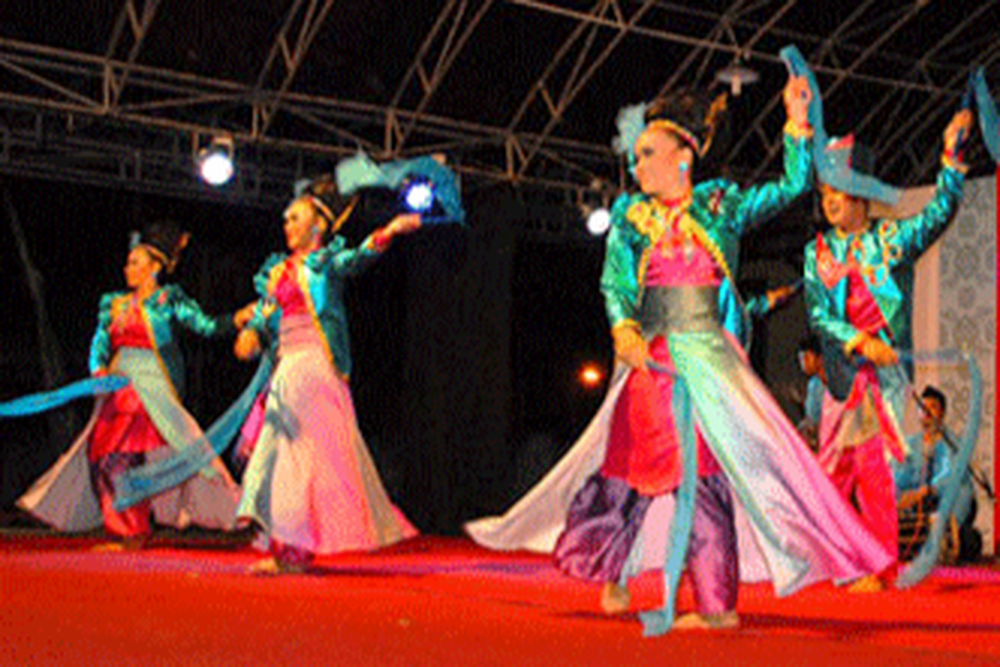
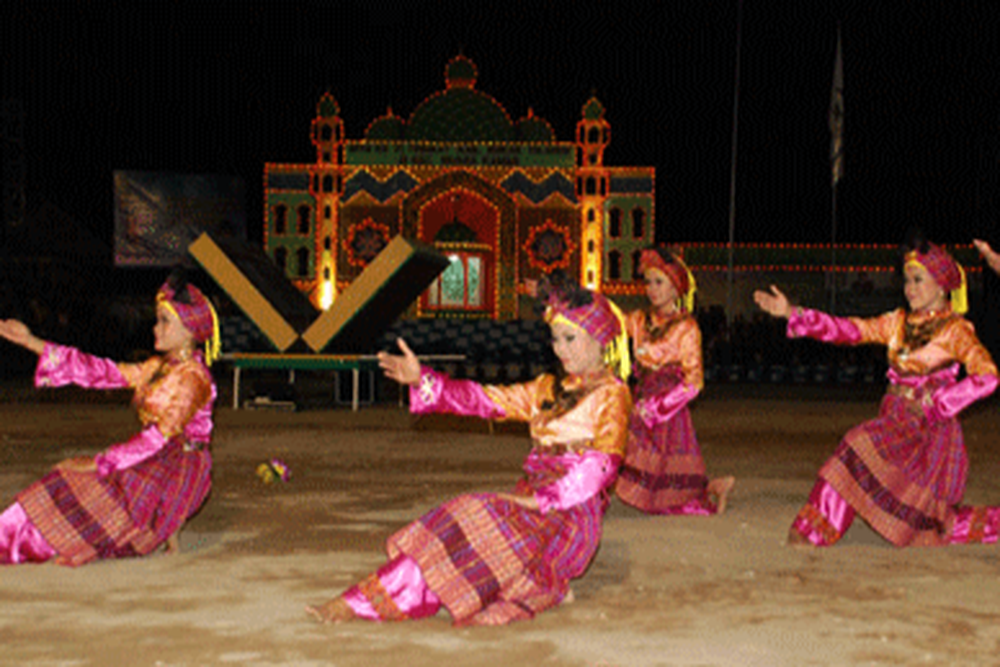
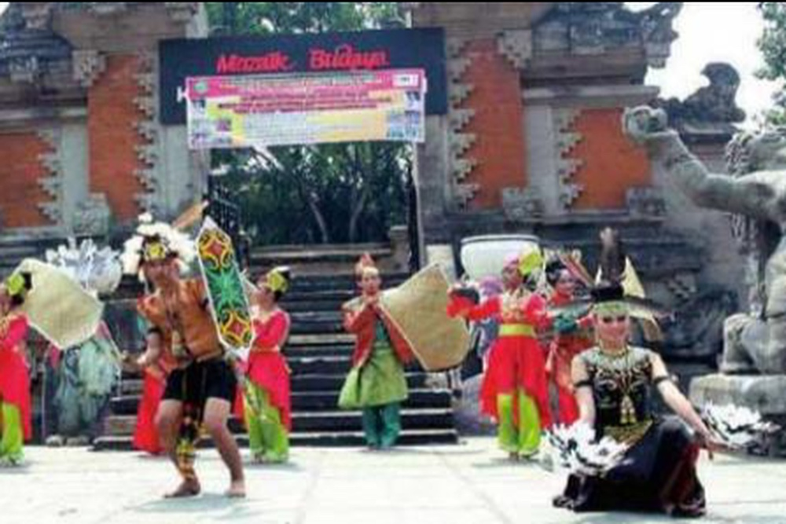

|  |
Pertunjukan Tari Jepen Tarian Tradisional Mahakam Kalimantan Timur
Tari Jepen Genjoh Mahakam ini merupakan salah satu jenis tari kreasi dengan gerakan asli dari Tari Jepen. Gerakan tersebut adalah antara lain gerakan samba setengah, gerakan samba penuh, gerakan gelombang, jalan kenyak, geraka taktim dan seluang mudik.
Dalam pertunjukan tarinya tarian ini dilengkapi dengan selendang untuk properti serta tata rias minimalis dan terlihat lebih bersahaja. Iringan yang digunakan untuk tarian ini adalah music tingkilan.
Musik tingkilan ini adalah salah satu seni music khas kutai. Alat musik yang digunakan sebagai iringan tari ini adalah gambus, ketipung, kendang dan juga biola. Nyanyian yang digunakan dalam tari ini adalah bertingkilan yang berarti bersahutan. Nyanyian tersebut berisi syair dan petuah serta pesan moral.
|
|  |
Tari Kuyang Tarian Dayak Benuaq Kalimantan Timur
Tarian Kuyang yang terdapat di masyarakat Dayak Benuaq terdapat tarian Belian yang disebut tarian kuyang. Tari kuyang adalah sebuah tari yang digunakan untuk mengusir hantu penjaga pohon agar tidak mengganggu manusia. Fungsi lain dari Tari Kuyang juga digunakan untuk mengobati penyakit.
|
|  |
Tarian Babada
Tarian Babada dan tarian Gong khas masyarakat Dayak, serta beberapa lagu daerah, seperti Lamin Talungsur dan Busak Mallur, mampu memukau pengunjung TMII. Tidak hanya Berau, pada acara itu ditampilkan pula aneka budaya khas Kaltim serta Kaltara.
|